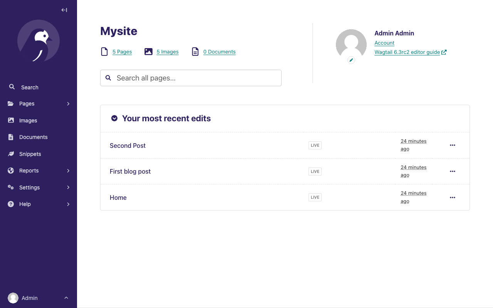
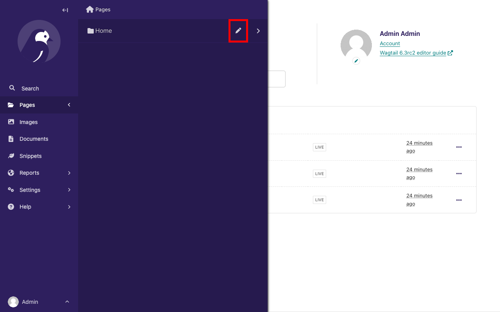
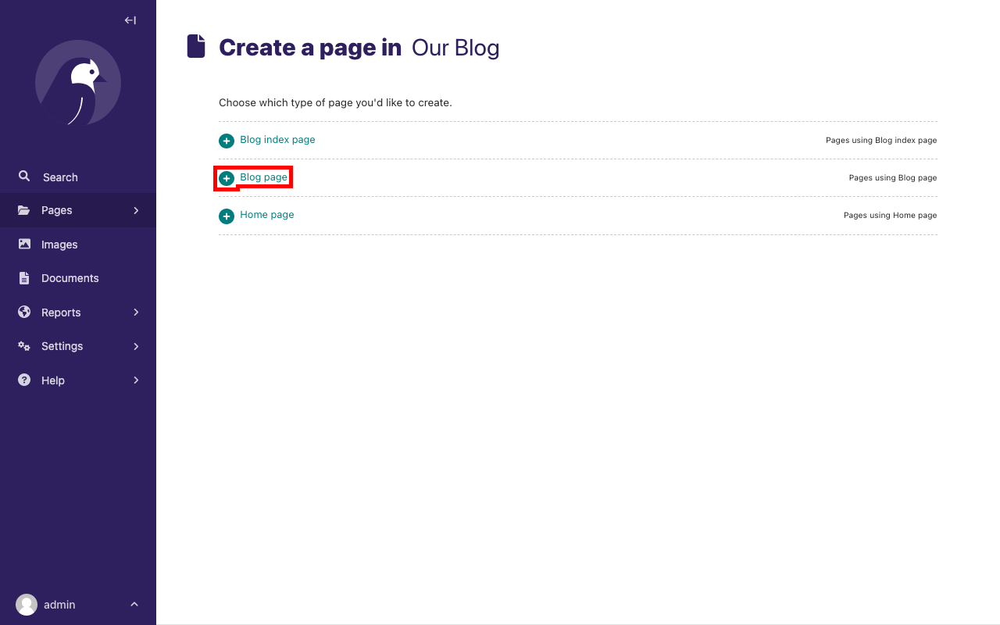
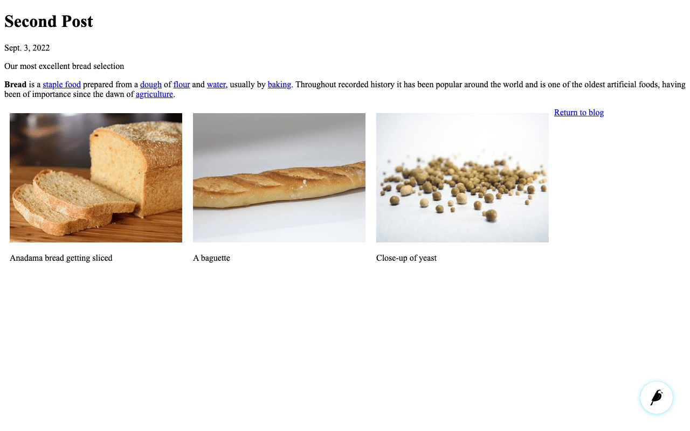
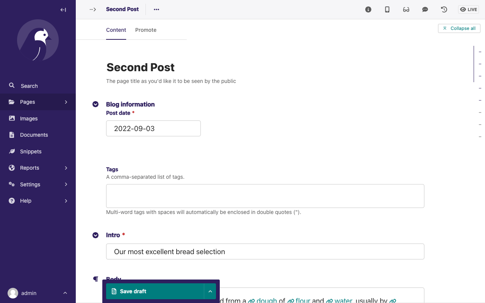
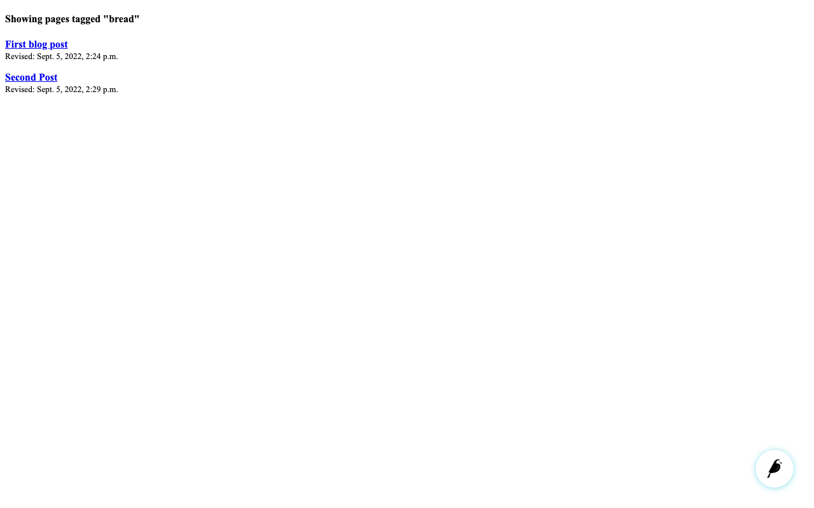

Your first Wagtail site¶
This tutorial shows you how to build a blog using Wagtail. Also, the tutorial gives you hands-on experience with some of Wagtail’s features.
To complete this tutorial, we recommend that you have some basic programming knowledge, as well as an understanding of web development concepts. A basic understanding of Python and the Django framework ensures a more grounded understanding of this tutorial, but it’s not mandatory.
Note
If you want to add Wagtail to an existing Django project instead, see Integrating Wagtail into a Django project.
Install and run Wagtail¶
Install dependencies¶
View the compatible versions of Python that Wagtail supports.
To check if you have an appropriate version of Python 3, run the following command:
python --version
# Or:
python3 --version
# **On Windows** (cmd.exe, with the Python Launcher for Windows):
py --version
If none of the preceding commands return a version number, or return a version lower than 3.9, then install Python 3.
Create and activate a virtual environment¶
This tutorial recommends using a virtual environment, which isolates installed dependencies from other projects.
This tutorial uses venv, which is packaged with Python 3. On Ubuntu, it may be necessary to run sudo apt install python3-venv to install it.
On Windows (cmd.exe), run the following command to create a virtual environment:
py -m venv mysite\env
Activate this virtual environment using:
mysite\env\Scripts\activate.bat
# if mysite\env\Scripts\activate.bat doesn't work, run:
mysite\env\Scripts\activate
On GNU/Linux or MacOS (bash):
Create the virtual environment using:
python -m venv mysite/env
Activate the virtual environment using:
source mysite/env/bin/activate
Upon activation, your command line will show (env) to indicate that you’re now working within this virtual environment.
For other shells see the venv documentation.
Note
If you’re using version control such as git, then mysite is the directory for your project.
You must exclude the env directory from any version control.
Install Wagtail¶
To install Wagtail and its dependencies, use pip, which is packaged with Python:
pip install wagtail
Generate your site¶
Wagtail provides a start command similar to django-admin startproject. Running wagtail start mysite in your project generates a new mysite folder with a few Wagtail-specific extras, including the required project settings, a “home” app with a blank HomePage model and basic templates, and a sample “search” app.
Because the folder mysite was already created by venv, run wagtail start with an additional argument to specify the destination directory:
wagtail start mysite mysite
Here is the generated project structure:
mysite/
├── .dockerignore
├── Dockerfile
├── home/
├── manage.py*
├── mysite/
├── requirements.txt
└── search/
Install project dependencies¶
cd mysite
pip install -r requirements.txt
This ensures that you have the relevant versions of Wagtail, Django, and any other dependencies for the project that you’ve just created.
The requirements.txt file contains all the dependencies needed to run the project.
Create the database¶
By default, your database is SQLite. To match your database tables with your project’s models, run the following command:
python manage.py migrate
This command ensures that the tables in your database match the models in your project. Every time you alter your model, then you must run the python manage.py migrate command to update the database. For example, if you add a field to a model, then you must run the command.
Create an admin user¶
python manage.py createsuperuser
This prompts you to create a new admin user account with full permissions. It’s important to note that for security reasons, the password text won’t be visible while typing.
Start the server¶
python manage.py runserver
After the server starts, go to http://127.0.0.1:8000 to see Wagtail’s welcome page:

Note
This tutorial uses http://127.0.0.1:8000 as the URL for your development server but depending on your setup, this could be a different IP address or port. Please read the console output of manage.py runserver to determine the correct URL for your local site.
You can now access the admin interface by logging into http://127.0.0.1:8000/admin with the username and password that you entered while creating an admin user with createsuperuser.

Extend the HomePage model¶
Out of the box, the “home” app defines a blank HomePage model in models.py, along with a migration that creates a homepage and configures Wagtail to use it.
Edit home/models.py as follows, to add a body field to the model:
from django.db import models
from wagtail.models import Page
from wagtail.fields import RichTextField
class HomePage(Page):
body = RichTextField(blank=True)
content_panels = Page.content_panels + ["body"]
body is a RichTextField, a special Wagtail field. When blank=True,
it means the field isn’t mandatory and you can leave it empty. You can use any of the Django core fields. content_panels define the capabilities and the layout of the editing interface. Adding fields to content_panels enables you to edit them in the Wagtail admin interface. You can read more about this on Page models.
Run:
# Creates the migrations file.
python manage.py makemigrations
# Executes the migrations and updates the database with your model changes.
python manage.py migrate
You must run the preceding commands each time you make changes to the model definition. Here is the expected output from the terminal:
Migrations for 'home':
home/migrations/0003_homepage_body.py
- Add field body to homepage
Operations to perform:
Apply all migrations: admin, auth, contenttypes, home, sessions, taggit, wagtailadmin, wagtailcore, wagtaildocs, wagtailembeds, wagtailforms, wagtailimages, wagtailredirects, wagtailsearch, wagtailusers
Running migrations:
Applying home.0003_homepage_body... OK
You can now edit the homepage within the Wagtail admin interface. On your Sidebar, go to Pages and click edit beside Home to see the new body field.

Enter the text “Welcome to our new site!” into the body field, and publish the page by selecting Publish at the bottom of the page editor, rather than Save Draft.
You must update the page template to reflect the changes made
to the model. Wagtail uses normal Django templates to render each page
type. By default, it looks for a template filename formed from the app and model name,
separating capital letters with underscores. For example, HomePage within the “home” app becomes
home/home_page.html. This template file can exist in any location that
Django’s template rules recognize. Conventionally, you can place it within a templates folder within the app.
Edit home/templates/home/home_page.html to contain the following:
{% extends "base.html" %}
<!-- load wagtailcore_tags by adding this: -->
{% load wagtailcore_tags %}
{% block body_class %}template-homepage{% endblock %}
<!-- replace everything below with: -->
{% block content %}
{{ page.body|richtext }}
{% endblock %}
base.html refers to a parent template. It must always be the first template tag that you use in a template. Extending from this template saves you from rewriting code and allows pages across your app to share a similar frame. By using block tags in the child template, you can override specific content within the parent template.
Also, you must load wagtailcore_tags at the top of the template and provide additional tags to those provided by Django.

A basic blog¶
You are now ready to create a blog, use the following command line to create a new app in your Wagtail project.
python manage.py startapp blog
Add the new blog app to INSTALLED_APPS in mysite/settings/base.py.
INSTALLED_APPS = [
"blog", # <- Our new blog app.
"home",
"search",
"wagtail.contrib.forms",
"wagtail.contrib.redirects",
"wagtail.embeds",
"wagtail.sites",
"wagtail.users",
#... other packages
]
Note
You must register all apps within the INSTALLED_APPS section of the base.py file in the mysite/settings directory. Look at this file to see how the start command lists your project’s apps.
Blog index and posts¶
Start with creating a simple index page for your blog. Edit blog/models.py to include:
from django.db import models
# Add these:
from wagtail.models import Page
from wagtail.fields import RichTextField
class BlogIndexPage(Page):
intro = RichTextField(blank=True)
content_panels = Page.content_panels + ["intro"]
Since you added a new model to your app, you must create and run a database migration:
python manage.py makemigrations
python manage.py migrate
Also, since the model name is BlogIndexPage, the default template name,
unless you override it, is blog_index_page.html. Django looks for a template whose name matches the name of your Page model within the templates directory in your blog app folder. You can override this default behavior if you want to. To create a template for the
BlogIndexPage model, create a file at the location blog/templates/blog/blog_index_page.html.
Note
You need to create the folders templates/blog within your blog app folder.
In your blog_index_page.html file enter the following content:
{% extends "base.html" %}
{% load wagtailcore_tags %}
{% block body_class %}template-blogindexpage{% endblock %}
{% block content %}
<h1>{{ page.title }}</h1>
<div class="intro">{{ page.intro|richtext }}</div>
{% for post in page.get_children %}
<h2><a href="{% pageurl post %}">{{ post.title }}</a></h2>
{{ post.specific.intro }}
{{ post.specific.body|richtext }}
{% endfor %}
{% endblock %}
Other than using get_children, the preceding blog_index_page.html template is similar to your previous work with the home_page.html template. You will learn about the use of get_children later in the tutorial.
If you have a Django background, then you will notice that the pageurl tag is similar to Django’s url tag, but takes a Wagtail Page object as an additional argument.
Now that this is complete, here is how you can create a page from the Wagtail admin interface:
Go to http://127.0.0.1:8000/admin and sign in with your admin user details.
In the Wagtail admin interface, go to Pages, then click Home.
Add a child page to the Home page by clicking the
+icon (Add child page) at the top of the screen.Choose Blog index page from the list of the page types.
Use “Blog” as your page title, make sure it has the slug “blog” on the Promote tab, and publish it.
You can now access the URL, http://127.0.0.1:8000/blog on your site. Note how the slug from the Promote tab defines the page URL.
Now create a model and template for your blog posts. Edit blog/models.py to include:
from django.db import models
from wagtail.models import Page
from wagtail.fields import RichTextField
# keep the definition of BlogIndexPage model, and add the BlogPage model:
class BlogPage(Page):
date = models.DateField("Post date")
intro = models.CharField(max_length=250)
body = RichTextField(blank=True)
content_panels = Page.content_panels + ["date", "intro", "body"]
You have to migrate your database again because of the new changes in your models.py file:
python manage.py makemigrations
python manage.py migrate
Create a new template file at the location blog/templates/blog/blog_page.html. Now add the following content to your blog_page.html file:
{% extends "base.html" %}
{% load wagtailcore_tags %}
{% block body_class %}template-blogpage{% endblock %}
{% block content %}
<h1>{{ page.title }}</h1>
<p class="meta">{{ page.date }}</p>
<div class="intro">{{ page.intro }}</div>
{{ page.body|richtext }}
<p><a href="{{ page.get_parent.url }}">Return to blog</a></p>
{% endblock %}
Note the use of Wagtail’s built-in get_parent() method to obtain the
URL of the blog this post is a part of.
Now, go to your admin interface and create a few blog posts as children of BlogIndexPage by following these steps:
Click Pages from the Wagtail Sidebar, and then click Home
Hover on Blog and click Add child page.

Select the page type, Blog page:

Populate the fields with the content of your choice:

To add a link from your rich text Body field, highlight the text you want to attach the link to. You can now see a pop-up modal which has several actions represented by their icons. Click on the appropriate icon to add a link. You can also click the + icon, which appears at the left-hand side of the field to get similar actions as those shown in the pop-up modal.
To add an image, press enter to move to the next line in the field. Then click the + icon and select Image from the list of actions to add an image.
Note
Wagtail gives you full control over the kind of content you can create under various parent content types. By default, any page type can be a child of any other page type.
Publish each blog post when you are done editing.
Congratulations! You now have the beginnings of a working blog. If you go to http://127.0.0.1:8000/blog in your browser, you can see all the posts that you created by following the preceding steps:

Titles should link to post pages, and a link back to the blog’s homepage should appear in the footer of each post page.
Parents and children¶
Much of the work in Wagtail revolves around the concept of hierarchical tree structures consisting of nodes and leaves. You can read more on this Theory. In this case, the BlogIndexPage serves as a node, and individual BlogPage instances represent the leaves.
Take another look at the guts of blog_index_page.html:
{% for post in page.get_children %}
<h2><a href="{% pageurl post %}">{{ post.title }}</a></h2>
{{ post.specific.intro }}
{{ post.specific.body|richtext }}
{% endfor %}
Every “page” in Wagtail can call out to its parent or children
from its position in the hierarchy. But why do you have to
specify post.specific.intro rather than post.intro?
This has to do with the way you define your model, class BlogPage(Page). The get_children() method gets you a list of instances of the Page base class.
When you want to reference properties of the instances that inherit from the base class,
Wagtail provides the specific method that retrieves the actual BlogPage record.
While the “title” field is present on the base Page model, “intro” is only present
on the BlogPage model. So you need .specific to access it.
You can simplify the template code by using the Django with tag. Now, modify your blog_index_page.html:
{% for post in page.get_children %}
{% with post=post.specific %}
<h2><a href="{% pageurl post %}">{{ post.title }}</a></h2>
<p>{{ post.intro }}</p>
{{ post.body|richtext }}
{% endwith %}
{% endfor %}
When you start writing more customized Wagtail code, you’ll find a whole set of QuerySet modifiers to help you navigate the hierarchy.
# Given a page object 'somepage':
MyModel.objects.descendant_of(somepage)
child_of(page) / not_child_of(somepage)
ancestor_of(somepage) / not_ancestor_of(somepage)
parent_of(somepage) / not_parent_of(somepage)
sibling_of(somepage) / not_sibling_of(somepage)
# ... and ...
somepage.get_children()
somepage.get_ancestors()
somepage.get_descendants()
somepage.get_siblings()
For more information, see Page QuerySet reference
Overriding Context¶
With a keen eye, you may have noticed problems with the blog index page:
Posts are in chronological order. Generally blogs display content in reverse chronological order.
Posts drafts are visible. You want to make sure that it displays only published content.
To accomplish these, you need to do more than grab the index
page’s children in the template. Instead, you want to modify the
QuerySet in the model definition. Wagtail makes this possible via
the overridable get_context() method.
Modify your BlogIndexPage model:
class BlogIndexPage(Page):
intro = RichTextField(blank=True)
# add the get_context method:
def get_context(self, request):
# Update context to include only published posts, ordered by reverse-chron
context = super().get_context(request)
blogpages = self.get_children().live().order_by('-first_published_at')
context['blogpages'] = blogpages
return context
# ...
Here is a quick breakdown of the changes that you made:
You retrieved the original context.
You created a custom QuerySet modifier.
You added the custom QuerySet modifier to the retrieved context.
You returned the modified context to the view.
You also need to modify your blog_index_page.html template slightly. Change:
{% for post in page.get_children %} to {% for post in blogpages %}
Now, unpublish one of your posts. The unpublished post should disappear from your blog’s index page. Also, the remaining posts should now be sorted with the most recently published posts coming first.
Images¶
The next feature that you need to add is the ability to attach an image gallery to your blog posts. While it’s possible to simply insert images into the rich text body field, there are several advantages to setting up your gallery images as a new dedicated object type within the database. This way, you have full control over the layout and styling of the images on the template, rather than having to lay them out in a particular way within the field. It also makes it possible for you to use the images elsewhere, independently of the blog text. For example, displaying a thumbnail on the blog’s index page.
Now modify your BlogPage model and add a new BlogPageGalleryImage model to blog/models.py:
# New imports added for ParentalKey, Orderable
from modelcluster.fields import ParentalKey
from wagtail.models import Page, Orderable
from wagtail.fields import RichTextField
# ... Keep the definition of BlogIndexPage, update the content_panels of BlogPage, and add a new BlogPageGalleryImage model:
class BlogPage(Page):
date = models.DateField("Post date")
intro = models.CharField(max_length=250)
body = RichTextField(blank=True)
content_panels = Page.content_panels + [
"date", "intro", "body",
# Add this
"gallery_images",
]
class BlogPageGalleryImage(Orderable):
page = ParentalKey(BlogPage, on_delete=models.CASCADE, related_name='gallery_images')
image = models.ForeignKey(
'wagtailimages.Image', on_delete=models.CASCADE, related_name='+'
)
caption = models.CharField(blank=True, max_length=250)
panels = ["image", "caption"]
Run python manage.py makemigrations and python manage.py migrate.
There are a few new concepts here:
Inheriting from
Orderableadds asort_orderfield to the model to keep track of the ordering of images in the gallery.The
ParentalKeytoBlogPageis what attaches the gallery images to a specific page. AParentalKeyworks similarly to aForeignKey, but also definesBlogPageGalleryImageas a “child” of theBlogPagemodel, so that it’s treated as a fundamental part of the page in operations like submitting for moderation, and tracking revision history.imageis aForeignKeyto Wagtail’s built-inImagemodel, which stores the actual images. This appears in the page editor as a pop-up interface for choosing an existing image or uploading a new one. This way, you allow an image to exist in multiple galleries. This creates a many-to-many relationship between pages and images.Specifying
on_delete=models.CASCADEon the foreign key means that deleting the image from the system also deletes the gallery entry. In other situations, it might be appropriate to leave the gallery entry in place. For example, if an “our staff” page includes a list of people with headshots, and you delete one of those photos, but prefer to leave the person in place on the page without a photo. In this case, you must set the foreign key toblank=True, null=True, on_delete=models.SET_NULL.Finally, adding the
InlinePaneltoBlogPage.content_panelsmakes the gallery images available on the editing interface forBlogPage.
After editing your blog/models.py, you should see Images in your Sidebar and a Gallery images field with the option to upload images and provide a caption for it in the Edit Screen of your blog posts.
Edit your blog page template blog_page.html to include the images section:
<!-- Load the wagtailimages_tags: -->
{% load wagtailcore_tags wagtailimages_tags %}
{% block body_class %}template-blogpage{% endblock %}
{% block content %}
<h1>{{ page.title }}</h1>
<p class="meta">{{ page.date }}</p>
<div class="intro">{{ page.intro }}</div>
{{ page.body|richtext }}
<!-- Add this: -->
{% for item in page.gallery_images.all %}
<div style="float: inline-start; margin: 10px">
{% image item.image fill-320x240 %}
<p>{{ item.caption }}</p>
</div>
{% endfor %}
<p><a href="{{ page.get_parent.url }}">Return to blog</a></p>
{% endblock %}
Make sure to upload some images when editing the blog page on your Wagtail admin if you want to display them after editing your blog page template.
Here, you use the {% image %} tag, which exists in the wagtailimages_tags library, imported at the top of the template to insert an <img> element, with a fill-320x240 parameter to resize and crop the image to fill a 320x240 rectangle. You can read more about using images in templates in the docs.

Since your gallery images are database objects in their own right, you can now query and re-use them independently of the blog post body. Now, define a main_image method in your BlogPage model, which returns the image from the first gallery item or None if no gallery items exist:
class BlogPage(Page):
date = models.DateField("Post date")
intro = models.CharField(max_length=250)
body = RichTextField(blank=True)
# Add the main_image method:
def main_image(self):
gallery_item = self.gallery_images.first()
if gallery_item:
return gallery_item.image
else:
return None
content_panels = Page.content_panels + ["date", "intro", "body", "gallery_images"]
This method is now available from your templates. Update blog_index_page.html to load the wagtailimages_tags library and include the main image as a thumbnail alongside each post:
<!-- Load wagtailimages_tags: -->
{% load wagtailcore_tags wagtailimages_tags %}
<!-- Modify this: -->
{% for post in blogpages %}
{% with post=post.specific %}
<h2><a href="{% pageurl post %}">{{ post.title }}</a></h2>
<!-- Add this: -->
{% with post.main_image as main_image %}
{% if main_image %}{% image main_image fill-160x100 %}{% endif %}
{% endwith %}
<p>{{ post.intro }}</p>
{{ post.body|richtext }}
{% endwith %}
{% endfor %}
Tag posts¶
Let’s say you want to let editors “tag” their posts, so that readers can, for example,
view all bicycle-related content together. For this, you have to invoke
the tagging system bundled with Wagtail, attach it to the BlogPage
model and content panels, and render linked tags on the blog post template.
Of course, you’ll also need a working tag-specific URL view as well.
First, alter models.py once more:
from django import forms
from django.db import models
# New imports added for ClusterTaggableManager, TaggedItemBase
from modelcluster.fields import ParentalKey, ParentalManyToManyField
from modelcluster.contrib.taggit import ClusterTaggableManager
from taggit.models import TaggedItemBase
from wagtail.models import Page, Orderable
from wagtail.fields import RichTextField
from wagtail.admin.panels import FieldPanel, InlinePanel, MultiFieldPanel
# ... Keep the definition of BlogIndexPage model and add a new BlogPageTag model
class BlogPageTag(TaggedItemBase):
content_object = ParentalKey(
'BlogPage',
related_name='tagged_items',
on_delete=models.CASCADE
)
# Modify the BlogPage model:
class BlogPage(Page):
date = models.DateField("Post date")
intro = models.CharField(max_length=250)
body = RichTextField(blank=True)
authors = ParentalManyToManyField('blog.Author', blank=True)
# Add this:
tags = ClusterTaggableManager(through=BlogPageTag, blank=True)
# ... Keep the main_image method. Then modify the content_panels:
content_panels = Page.content_panels + [
MultiFieldPanel([
"date",
FieldPanel("authors", widget=forms.CheckboxSelectMultiple),
# Add this:
"tags",
], heading="Blog information"),
"intro", "body", "gallery_images"
]
Run python manage.py makemigrations and python manage.py migrate.
The changes you made can be summarized as follows:
New
modelclusterandtaggitimportsAddition of a new
BlogPageTagmodel, and atagsfield onBlogPage.
Edit one of your BlogPage instances, and you should now be able to tag posts:

To render tags on a BlogPage, add this to blog_page.html:
<p><a href="{{ page.get_parent.url }}">Return to blog</a></p>
<!-- Add this: -->
{% with tags=page.tags.all %}
{% if tags %}
<div class="tags">
<h3>Tags</h3>
{% for tag in tags %}
<a href="{% slugurl 'tags' %}?tag={{ tag }}"><button type="button">{{ tag }}</button></a>
{% endfor %}
</div>
{% endif %}
{% endwith %}
Notice that you’re linking to pages here with the builtin slugurl
tag rather than pageurl, which you used earlier. The difference is that slugurl takes a Page slug (from the Promote tab) as an argument. pageurl is more commonly used because it’s unambiguous and avoids extra database lookups. But in the case of this loop, the Page object isn’t readily available, so you fall back on the less-preferred slugurl tag.
With the modifications that you’ve made so far, visiting a blog post with tags displays a series of linked buttons at the bottom, one for each tag associated with the post. However, clicking on a button will result in a 404 error page, as you are yet to define a “tags” view.
Return to blog/models.py and add a new BlogTagIndexPage model:
class BlogTagIndexPage(Page):
def get_context(self, request):
# Filter by tag
tag = request.GET.get('tag')
blogpages = BlogPage.objects.filter(tags__name=tag)
# Update template context
context = super().get_context(request)
context['blogpages'] = blogpages
return context
Note that this Page-based model defines no fields of its own.
Even without fields, subclassing Page makes it a part of the
Wagtail ecosystem, so that you can give it a title and URL in the
admin. You can also override its get_context() method to add a
QuerySet to the context dictionary, making it available to the template.
Migrate this by running python manage.py makemigrations and then python manage.py migrate. After migrating the new changes, create a new BlogTagIndexPage in the admin interface. To create the BlogTagIndexPage, follow the same process you followed in creating the BlogIndexPage and give it the slug “tags” on the Promote tab. This means the BlogTagIndexPage is a child of the home page and parallel to Blog in the admin interface.
Access /tags and Django will tell you what you probably already knew.
You need to create the template, blog/templates/blog/blog_tag_index_page.html and add the following content to it:
{% extends "base.html" %}
{% load wagtailcore_tags %}
{% block content %}
{% if request.GET.tag %}
<h4>Showing pages tagged "{{ request.GET.tag }}"</h4>
{% endif %}
{% for blogpage in blogpages %}
<p>
<strong><a href="{% pageurl blogpage %}">{{ blogpage.title }}</a></strong><br />
<small>Revised: {{ blogpage.latest_revision_created_at }}</small><br />
</p>
{% empty %}
No pages found with that tag.
{% endfor %}
{% endblock %}
In the preceding blog_tag_index_page.html template, you’re calling the built-in latest_revision_created_at field on the Page model. It’s handy to know this is always available.
Clicking the tag button at the bottom of a blog post renders a page like this:

Congratulations!¶
You completed this tutorial 🥳. Applaud yourself, and get yourself a cookie!
Thank you for reading and welcome to the Wagtail community!
Where next¶
Read our full tutorial to transform your blog site into a fully deployable portfolio site.
Learn how to implement StreamField for freeform page content
Browse through the advanced topics section and read third-party tutorials